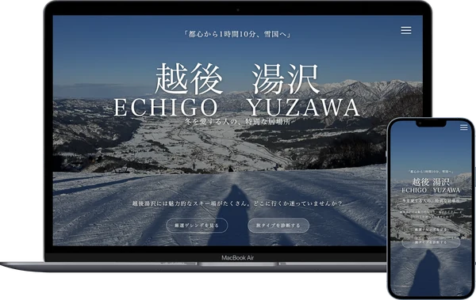
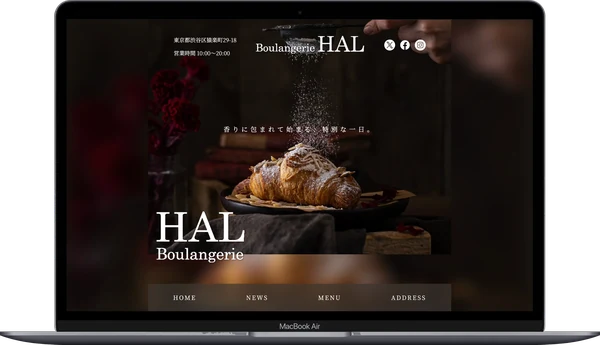
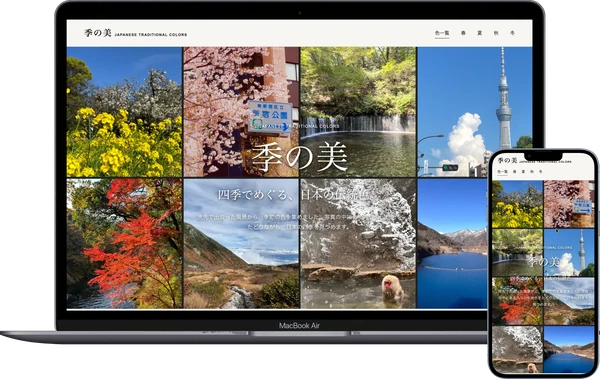
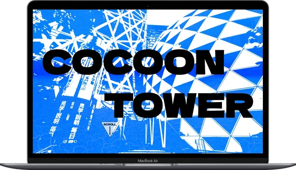
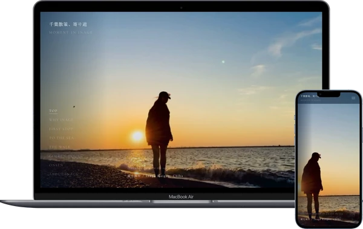
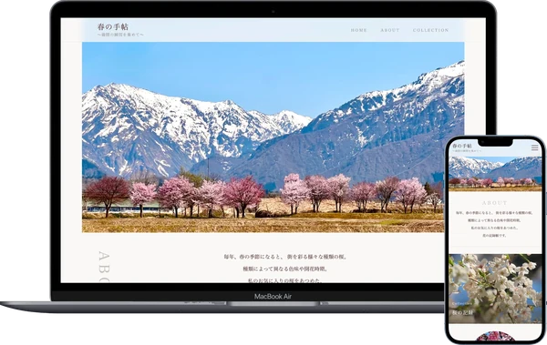
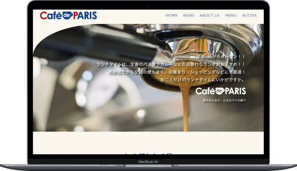

WEB DESIGN PORTFOLIO
LI PUI KA
Think beyond the idea.
Work
“Turning ideas into web experiences.”

スノースケープ湯沢旅行サイト · 2026/02条件から行き先を選ぶ、スキー場比較と診断。

HAL Boulangerie店舗サイト · 2025/11商品・価格・アクセスを、来店前に確認できる店舗サイト。

季の美コンテンツサイト · 2026/09写真から伝統色を知る、季節別のカタログ。

COCOON NAVIGATION校内ガイド · 2025/05初めての校舎で、教室への行き方を確認するUI。

MOMENTS IN INAGEコンテンツサイト · 2026/06章ごとの導線と時間の流れで見せる、街歩きの記録。

春の手帖コンテンツサイト · 2026/05写真・花期・撮影地で見比べる、桜の記録。

CAFÉ de PARIS店舗サイト · 2025/09料理と店舗情報をまとめた、初期のDesktop課題。
 PORTFOLIOPortfolio Website · 2026/09–10
PORTFOLIOPortfolio Website · 2026/09–10作品の比較から、制作意図と担当範囲へ。


季の美
Content Website · 2026/09
About
“From Hong Kong to Tokyo. Exploring ideas through web and design.”

Li Pui Ka リプイカ
Web Designer
香港のクリニックで長年働いた後、もう一度学び、新しい分野で仕事をしたいと考えました。当時は香港で日本語を学んでおり、日本の生活環境が好きだったこともあり、日本語学校への留学を決めました。
来日後、これからの仕事について調べる中で、Webデザインに興味を持ちました。画面のデザインや、見る人にわかりやすく伝える方法を学びたいと思い、HAL東京に入学しました。
実際に制作してみると、写真を選び、情報を整理して、一つのページにまとめていく時間が楽しく、Webデザインを仕事にしたいと感じました。見た目に惹かれて、もっと見たくなる。そんな魅力があり、使いやすさも大切にしたWebサイトをつくりたいです。
Education
HAL東京
WEB学科・WEBデザイン専攻
2027年3月 卒業予定
Focus
内容と情報の順序を整理し、サイトのテーマや目的が伝わる構成
写真・文字・レイアウトで、続きを見たくなる画面づくり
読みやすく、操作に迷わず、必要な情報を見つけられる設計
Tools
デザイン：Figma / Photoshop / Illustrator
実装・開発：HTML / CSS / JavaScript / VS Code / Git
制作支援：Codex
学習中：PHP / Python
Languages
広東語 / 中国語（普通話） / 英語 / 日本語
Contact
li.kaka.tokyo@gmail.comLet’s talk.